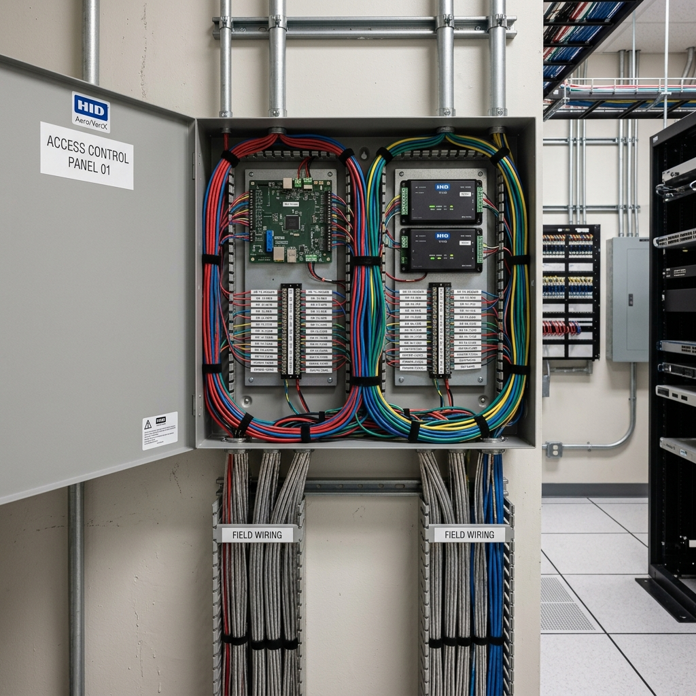

1. Why multi-door systems deserve a different conversation
A standalone single-door reader — the kind you buy off a shelf and program yourself — is a product decision. You choose based on price, read range, and whether it suits the door.
A multi-door networked access system is a different category of decision entirely. You are choosing an architecture that will govern how your building operates for the next ten to fifteen years. The controller platform, the software, the credential type, the cabling infrastructure — all of these choices compound over time. A system that cannot scale cleanly, cannot integrate with your CCTV, or cannot be centrally managed will create operational friction every day it runs.
The conversations we have with facilities managers who inherited a poorly specified multi-door system are almost always the same: the system works, but adding a door is expensive, removing access for a terminated employee requires visiting each reader individually, and the software has not been updated since the original installer stopped supporting it.
Getting the architecture right at the start costs nothing extra. Getting it wrong is expensive to correct.
2. Decide the scale before anything else
The first design input is the number of doors — now and in three to five years. This determines everything downstream: the controller capacity, the software licence tier, the cabling topology, and the management overhead.
Rough planning bands:
- 1 to 5 doors: standalone systems are viable and economical. Each reader manages itself. Acceptable administration overhead at this scale.
- 6 to 20 doors: networked system is the correct call. Centralised management pays for itself immediately in administration time. A single controller or small controller cluster with management software.
- 20 to 100 doors: enterprise-grade platform. Redundant controllers, server-based or cloud-based management software, integration with HR systems for automatic provisioning and de-provisioning.
- 100+ doors or multi-site: cloud platform with centralised management across locations. Single interface for all sites, all doors, all cardholders.
Always specify for where you expect to be in five years, not where you are today. A controller that maxes out at 16 doors costs almost the same as one that handles 64. The cost of replacing an undersized controller after expansion is multiples of the difference.
3. The controller — what it is and why it matters
The controller is the component that sits between the readers and the locks. It holds the access database, makes the grant or deny decision, and logs every event. It is also the component most likely to create lock-in.
Different brands use proprietary controller-to-reader protocols, proprietary software formats, and proprietary management platforms. If you specify Brand A controllers and their management software, adding Brand B readers later is typically not possible. Changing to a different management platform means migrating the entire cardholder database.
This is not inherently a problem — proprietary systems are often more tightly integrated and better supported than open alternatives. But it means the controller platform choice is a long-term commitment and should be made with that in mind.
Questions to ask about any controller platform:
- Is the management software sold as a perpetual licence or a subscription? What happens to the system if you stop paying the subscription?
- Is there an upgrade path to a larger controller without replacing the entire infrastructure?
- Who else in Singapore is using this platform — is there a local support ecosystem?
- What is the manufacturer's stated end-of-life policy for this hardware generation?

Access control controller panel showing multiple door connections. Clean server room installation.
4. Credential strategy — cards, mobile, or biometric
The credential type determines the day-to-day user experience for every person in the building. It also determines your vulnerability profile.
Standard proximity cards (MIFARE 13.56 MHz) remain the most common credential in Singapore commercial premises. Reliable, low cost per card, widely understood. The vulnerability is that cards can be cloned and can be shared between cardholders. For most office environments this is an acceptable risk. For higher-security environments it is not.
Mobile credentials use Bluetooth or NFC on a smartphone as the credential. Increasingly common in newer installations. The advantage is that a phone is harder to share than a card, and issuing or revoking a credential is instant — no physical card to collect. The limitation is that it requires all cardholders to have a compatible smartphone and to have the app installed and configured.
Biometric — fingerprint or facial recognition — solves the sharing problem definitively. The credential cannot be transferred. The operational trade-offs around throughput, hygiene, and PDPA compliance are covered in the card access article. For high-security internal zones within a larger installation, biometric at those specific doors alongside card for general access is a common and sensible hybrid.
Do not let the credential decision be made by default. The cheapest reader available is usually proximity card only. That may be fine. But the decision should be conscious and documented, not an artifact of whoever quoted the lowest price.
5. Zoning — dividing your building into access tiers
A multi-door system without a deliberate zoning strategy is just a collection of individual locks. Zoning is what turns it into a security architecture.
Typical zone tiers for a commercial office:
- Public zone: lobby, reception, client meeting rooms. No access control, or access control managed by reception staff.
- General staff zone: open office, staff areas, pantry, toilets. All staff cards work here during working hours.
- Restricted zone: server room, finance office, HR records, warehouse stock areas. Named individuals only.
- Management zone: MD office, board room, safe room. Senior staff and specific authorised individuals only.
- After-hours rules: general staff cards that work 8am to 7pm Monday to Friday do not work at 10pm on a Saturday.
For industrial premises, the zoning follows the operational risk profile: clean rooms, chemical stores, and high-value inventory typically form their own restricted zones.
6. Integration with CCTV and alarm systems
A multi-door access system that operates in isolation is missing its most useful capability. Integration turns event logs into evidence and turns access events into triggers.
Useful integrations to plan from the start:
- Access event triggers camera recording. The access log tells you who opened the door. The camera tells you what happened next.
- Forced door alarm. If a door contact shows the door open when no valid access event has been logged, the system generates an alarm.
- Failed access attempt alert. Three or more failed reads at a door in a short period triggers an alert.
- Integration with HR system. When an employee is terminated, the deprovisioning in the HR system automatically revokes their access card.
SECUREVISION VIEW: The most common failure mode we see in multi-door systems is not technology failure — it is administration failure. Specify a platform that is easy to administer, not just impressive to install. Audit logs that nobody looks at protect nothing.
7. What the handover documentation should include
When a multi-door access system is handed over, you should receive and store the following:
- A door schedule listing every door, controller, lock type, and fail-state
- The access zone map and time rule definitions
- Administrator login credentials for the management software
- Controller IP addresses and network configuration
- Software licence keys and renewal dates
- Manufacturer's local support and installer's helpdesk contact details
- Emergency override procedure for power or system failure
BOTTOM LINE: A multi-door access system is an infrastructure investment. The door schedule, total zone map, credential strategy, and integration plan should all exist on paper before a single reader is ordered. Contractors who push to move straight to a quote without these documents are skipping the design work.

Ler Wee Meng
Securevision holds Police Licence No. L/PS/000267/2023P and is registered with the Building and Construction Authority of Singapore.